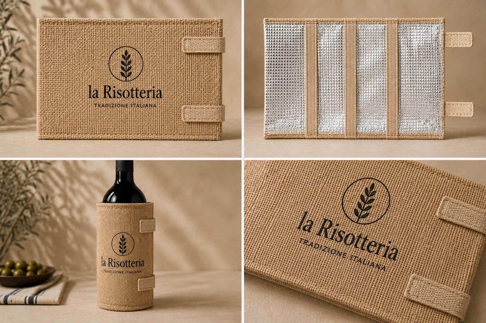
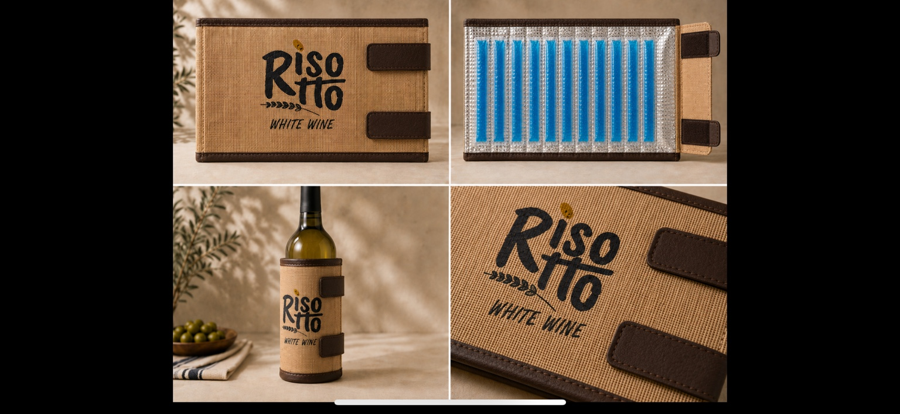
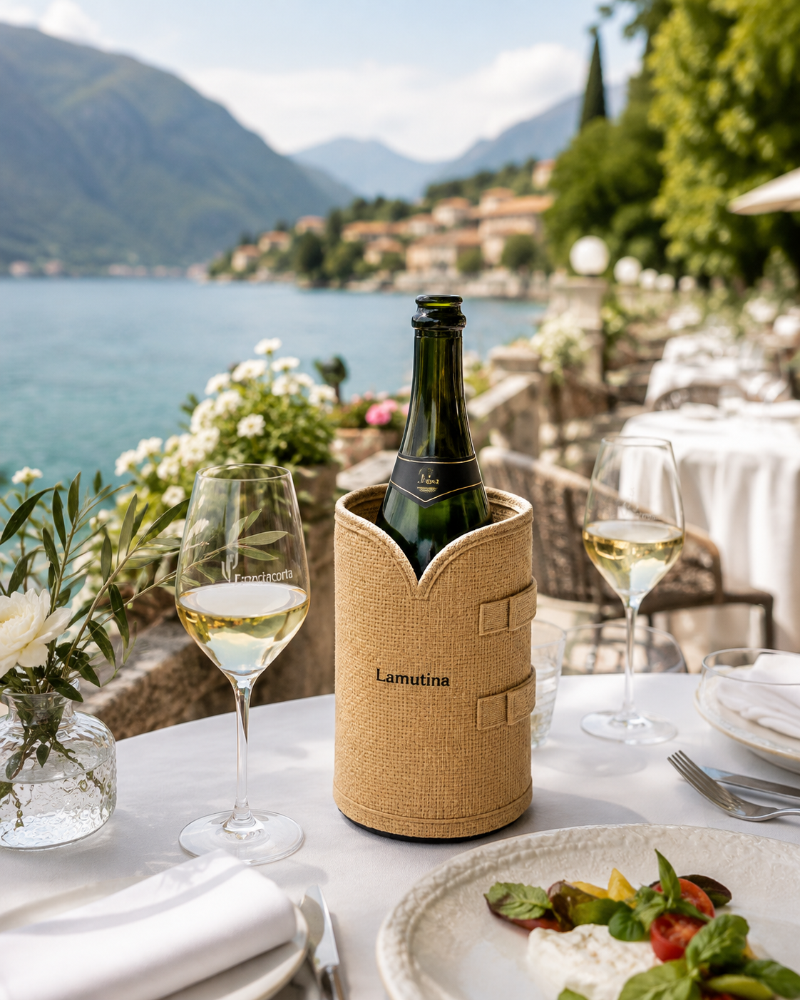
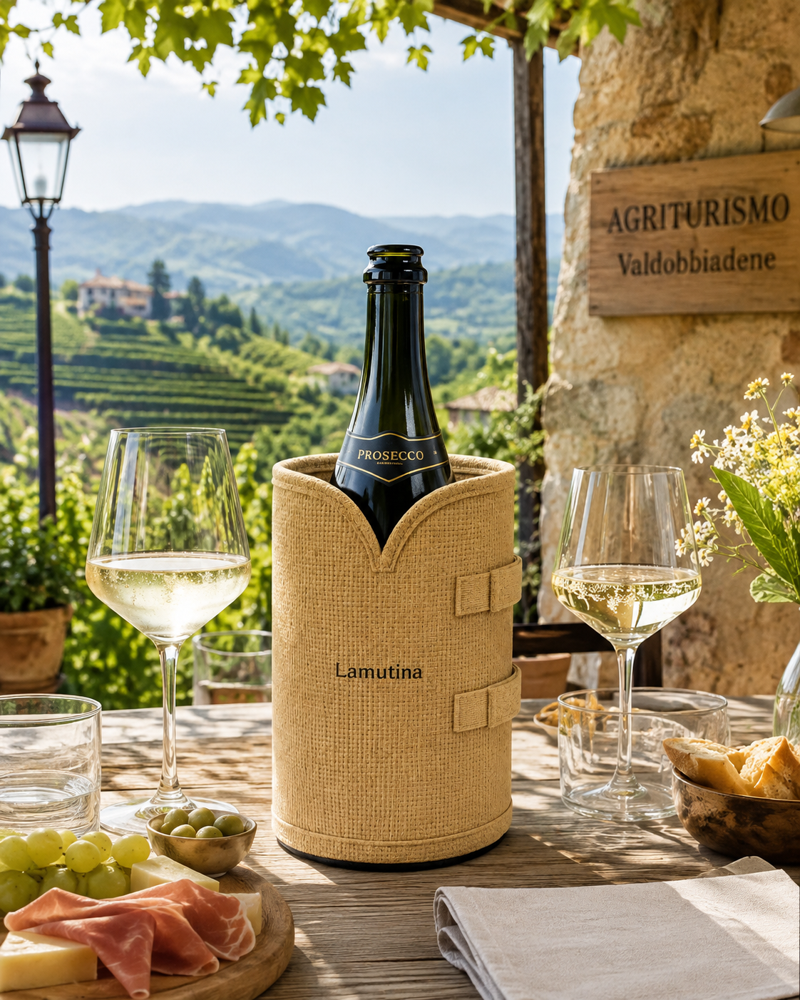

Easy
La versione più essenziale: juta naturale, chiusura semplice e immagine pulita. Il rendering mostra fronte, interno, utilizzo su bottiglia e dettaglio del logo.
Semplice e immediataScopri Easy →
Franciacorta a bordo lago, Prosecco tra le colline di Valdobbiadene, tavole curate e materiali naturali: La Mutina nasce per accompagnare il vino nei suoi momenti migliori.
Easy, Premium e Custom: la stessa idea sviluppata con immagini reali e personalizzazioni dedicate a ristoranti, cantine ed enoteche.
Le immagini prodotto utilizzate nelle sezioni di collezione rispecchiano i rendering attuali del prodotto in sviluppo.

La versione più essenziale: juta naturale, chiusura semplice e immagine pulita. Il rendering mostra fronte, interno, utilizzo su bottiglia e dettaglio del logo.
Semplice e immediata
Versione con finiture più ricercate e sistema refrigerante interno. Il rendering mostra chiaramente l’apertura, il gel e la costruzione del prodotto.
Con funzione refrigerante
Ogni dettaglio può essere personalizzato. L’esempio mostra una versione sviluppata per Ristorante Al Company Vicenza.
Creato per il tuo brandNon più inverno, ma servizio del vino all’aperto, in contesti reali dove il prodotto esprime funzione e presenza estetica.

Un contesto elegante e luminoso, ideale per raccontare il lato raffinato di La Mutina: tovaglia bianca, cucina curata e bottiglia pronta al servizio.

Un’atmosfera più rurale e autentica, perfetta per esprimere il carattere naturale della juta e la funzione refrigerante nelle occasioni estive.
La Mutina nasce dall’incontro tra cultura del vino, attenzione ai materiali naturali e ricerca di una funzione concreta. Il progetto vuole trasformare un semplice rivestimento in un elemento riconoscibile del servizio.
Stiamo sviluppando la collezione insieme a produttori specializzati, ristoratori e professionisti del vino, testando forme, finiture e soluzioni refrigeranti.
La nostra storiaDai loghi più essenziali alle finiture più caratterizzate, La Mutina può essere sviluppata come accessorio coordinato all’identità visiva di ristoranti, cantine, wine bar e strutture hospitality.
Vedi esempi customRichiedi informazioni sui campioni, sulle finiture e sulle personalizzazioni.